Jörg Restorff ist ein in Berlin lebender erfahrener Journalist und Kunsthistoriker. Seine Leidenschaft gilt der digitalen Welt. Als freiberuflicher Web Developer arbeitet er vor allem für Wissenschaftler und kleinere Unternehmen. Based in Berlin, Jörg Restorff is an experienced journalist and art historian with a passion for the digital world. He is a freelance web developer who enjoys working with a variety of clients and on diverse projects.
Skills
HTML, CSS, Sass, JavaScript, jQuery,
WordPress, PHP, SEO
Websites/Projekte
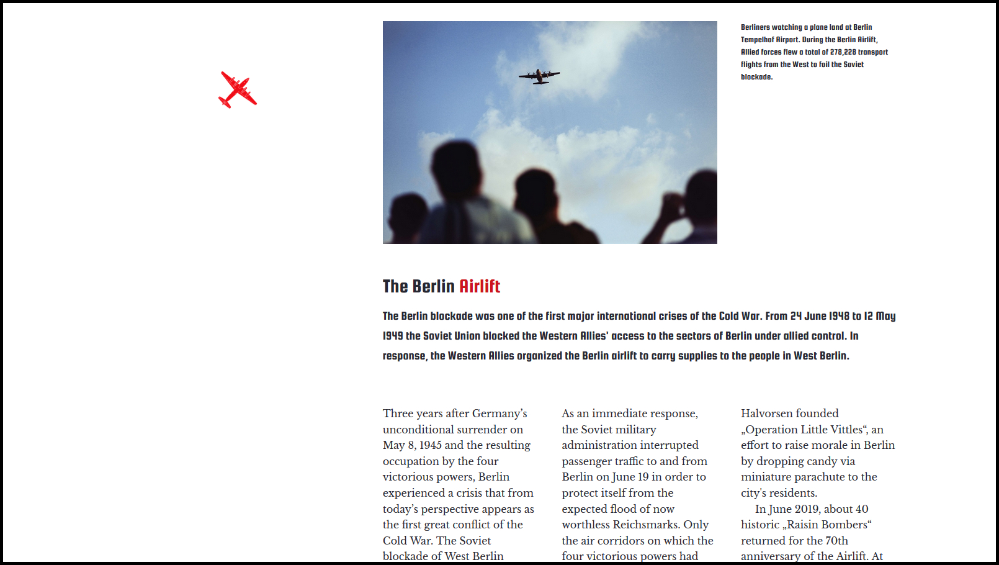
Die Berliner Luftbrücke
Diese Projektstudie erinnert an die Berliner Luftbrücke. 1948/1949 organisierten die westlichen Alliierten die Luftbrücke, um das von der Sowjetunion blockierte West-Berlin zu versorgen. This project contains a tribute page to the Berlin blockade. The blockade, which took place in 1948/1949, refers to when the Western Allies organized an airlift to carry supplies to West Berlin, but the mission was blocked by the Soviet Union.
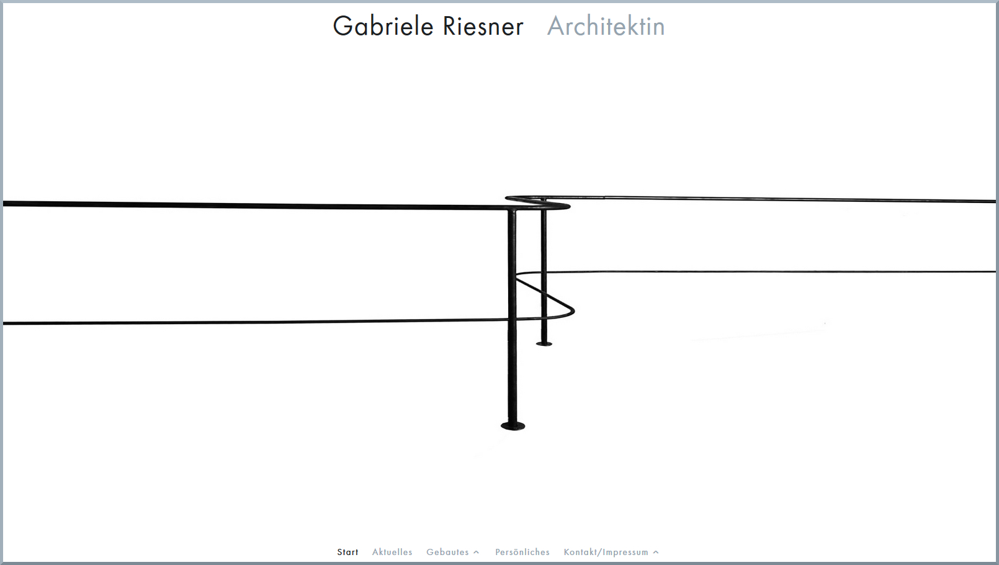
Gabriele Riesner, Architektin
Gabriele Riesner ist eine Berliner Architektin. In Berlin und Brandenburg realisiert sie Projekte, die vorzugsweise mit der behutsamen Modernisierung von Altbauten zu tun haben. Gabriele Riesner, a Berlin based architect, is realizing projects primarily pertaining to the careful modernization of historical buildings in Berlin and Brandenburg.
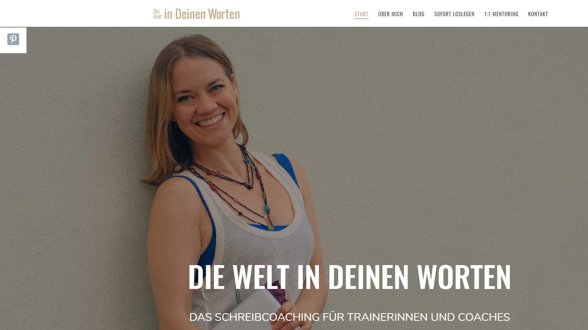
Die Welt in Deinen Worten
Anke Ernst, Schreibcoach und zertifizierte Bildungsreferentin, entwickelt Strategien und klare Anleitungen für Texte voller Persönlichkeit. Anke Ernst, who is a writing coach and certified expert on educational questions, develops strategies and clear instructions for texts in a manner full of personality.
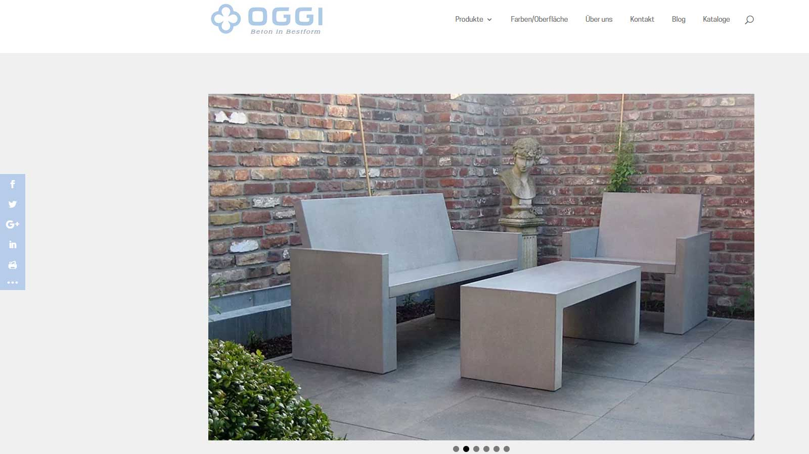
OGGI-Beton
Produkte aus der Manufaktur OGGI-Beton sind immer exklusive Unikate. Die Produktpalette reicht von der Küchenarbeitsplatte bis zum Betonmöbel. Products manufactured by OGGI-Beton develops products which are always unique. Their offer includes a wide range of products around the topic of concrete furniture.
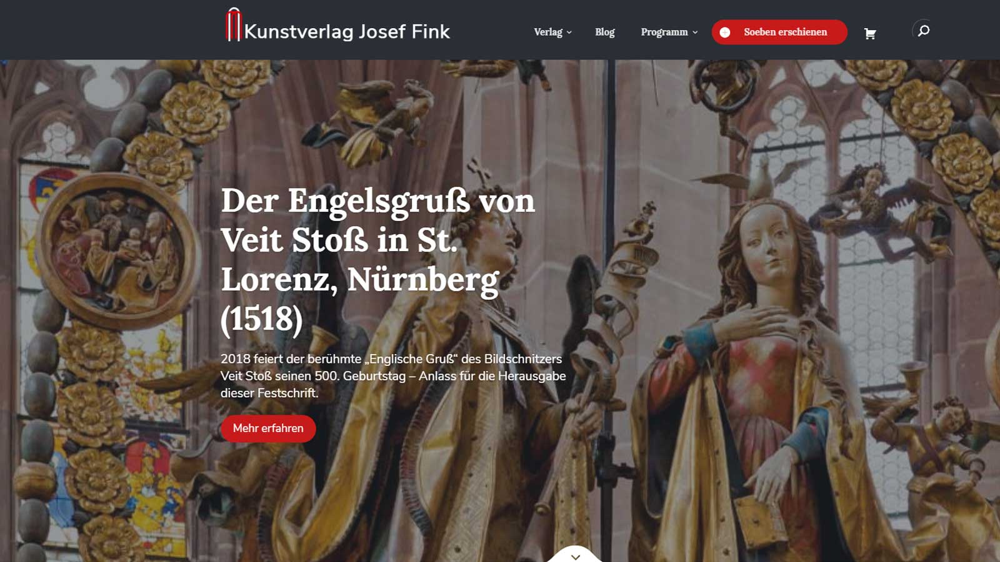
Kunstverlag Josef Fink
Der Verlag, ansässig in Lindenberg im Allgäu, hat sich spezialisiert auf Kleine Kunstführer sowie auf Bücher zu Kunst, Kultur und Religion. The publishing company, based in Lindenberg im Allgäu, is specialized in booklets about art monuments and books about art, culture and religion.
Walter Dörhage
SRMC – Science and Research Management Consulting, die Agentur für Wissenschaftsberatung und Wissenschaftsmanagement, Berlin, bietet Strategieberatung. SRMC – Science and Research Management Consulting is a Berlin based agency for strategy consulting.
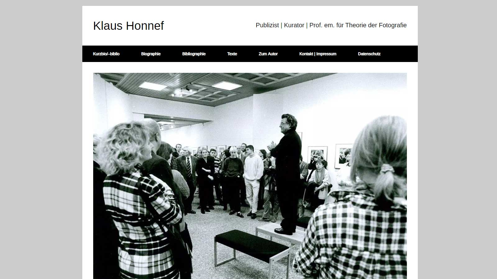
Klaus Honnef
Klaus Honnef hat sich über Jahrzehnte als Kunstkritiker ebenso profiliert wie als Ausstellungskurator und als Professor für Theorie der Fotografie. Over the past few decades, Klaus Honnef has earned his merits as an art critic, curator, and professor for the theory of photography.
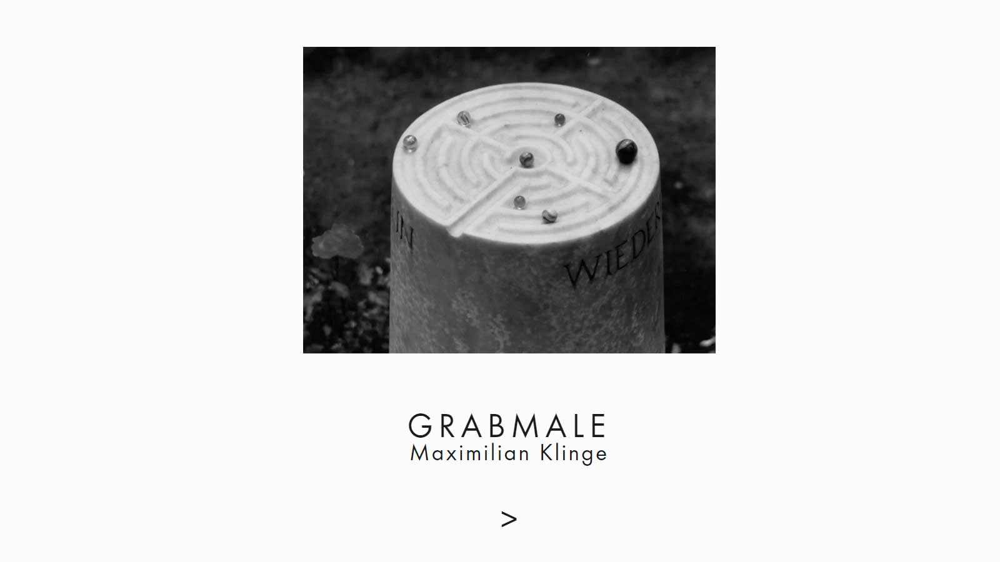
Maximilian Klinge
Maximilian Klinge arbeitet in Berlin als freischaffender Künstler. Seit 1993 gestaltet er auch Grabmale als Auftragsarbeiten nach den Wünschen der Auftraggeber. Maximilian Klinge is a Berlin based artist. Since 1993 he has molded sepulchral monuments, as contract works, according to the desire of the purchaser.
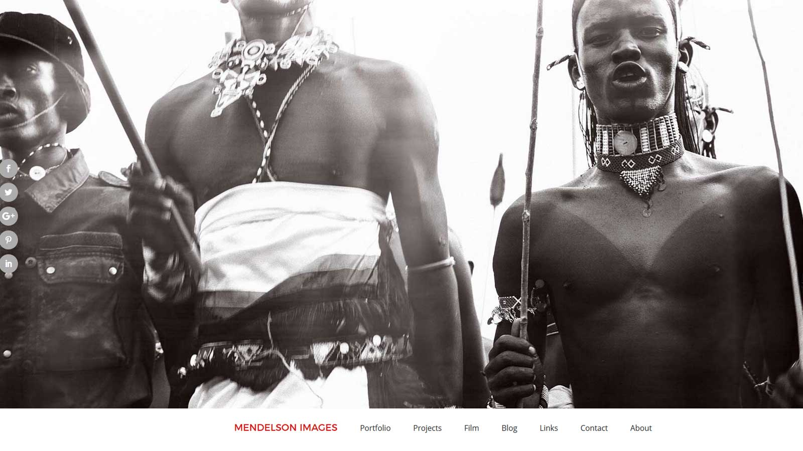
Mendelson Images
Marcy Mendelson ist eine amerikanische Fotokünstlerin, Naturschützerin und Dokumentarfilmerin, die in Berlin lebt. Marcy Mendelson is an American fine-art photographer, conservationist, and documentary filmmaker based in Berlin.
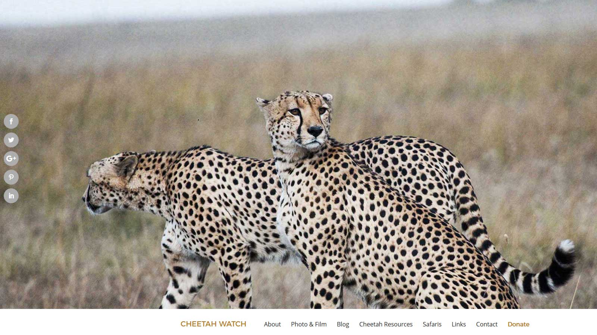
Cheetah Watch
Cheetah Watch ist ein Projekt zum Schutz von Geparden, initiiert von der amerikanischen Fotografin und Filmemacherin Marcy Mendelson. Cheetah Watch is a conservation project undertaken by photographer and filmmaker, Marcy Mendelson.
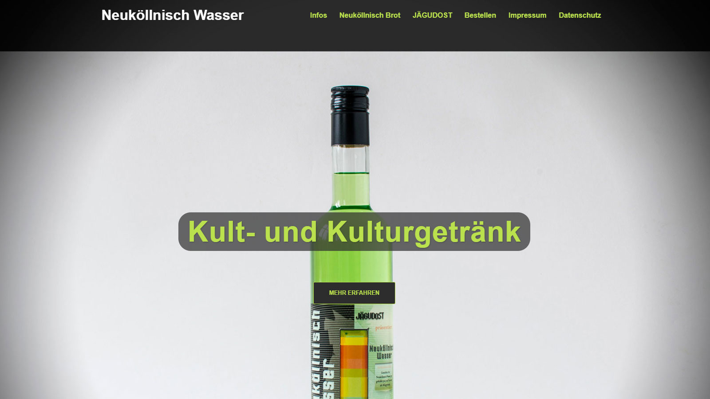
Neuköllnisch Wasser
Neuköllnisch Wasser ist der erste Likör, der als Kunstprojekt entstand. Entwickelt wurde das neue Kultgetränk von der Berliner Künstlergruppe JÄGUDOST. Neuköllnisch Wasser is the first liqueur that emerged from an art project. The new cult drink was developed by the Berlin art group JÄGUDOST.
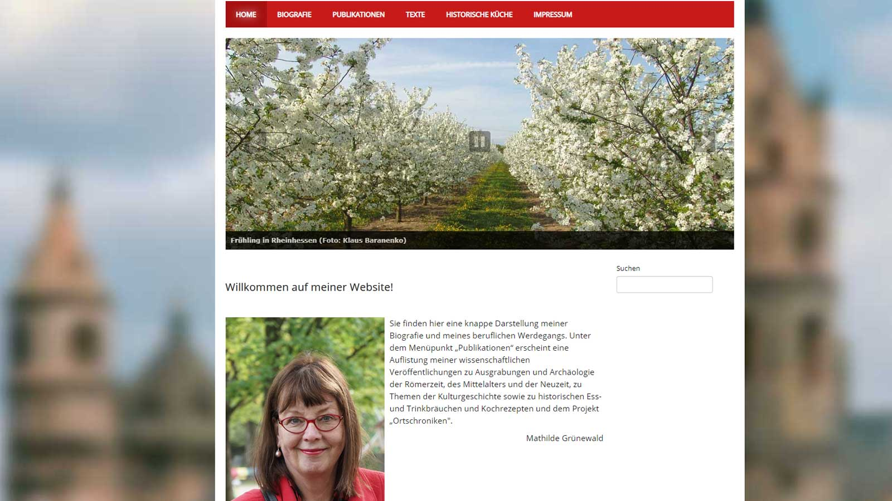
Mathilde Grünewald
Mathilde Grünewald ist eine deutsche Archäologin mit Schwerpunkt in der Provinzialrömischen Archäologie. Sie lebt in Worms. Mathilde Grünewald is a German archeologist specializing in archeology of the Roman provinces. She lives in Worms.